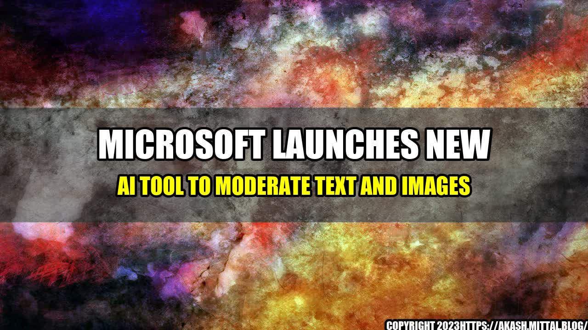

Microsoft Launches New AI Tool to Moderate Text and Images

There is no denying that the internet is the most transformative and disruptive technology in human history. With the help of the internet, we have access to limitless knowledge, and the ability to connect with anyone around the world. However, there are also some downsides to this phenomenon, such as cyberbullying, hate speech, and the spread of fake news and misinformation. To combat these issues, Microsoft has recently launched a new AI tool that can moderate text and images on the internet.
In 2016, a group of online trolls targeted Leslie Jones, a black actress who starred in the movie Ghostbusters. The trolls bombarded her Twitter account with racist and sexist comments, images, and memes. The harassment became so intense that Jones quit Twitter for a while and called for better tools to protect against online abuse. Her case highlighted the urgent need for effective moderation tools to prevent such incidents.
The AI Tool
Microsoft's new AI tool, called Content Moderator, uses machine learning and computer vision algorithms to scan user-generated content and determine whether it is safe or not. The tool can analyze text, images, and videos for adult content, offensive language, personal information, and other violations of policies and laws. It can provide a score that indicates the probability of the content being unsafe, and a list of recommended actions that can be taken, such as flagging, removing, or escalating the content.
The need for advanced moderation tools is evident in the following statistics:
- In 2018, at least 137 journalists and media workers were killed, and 1,307 journalists were assaulted or imprisoned, according to the Committee to Protect Journalists.
- In 2020, the Anti-Defamation League reported that the volume of online hate speech and harassment increased by 36% compared to the previous year, due to the COVID-19 pandemic and the Black Lives Matter movement.
- In 2021, the European Union proposed the Digital Services Act, which aims to create a single set of rules for online services, including social media, search engines, and online marketplaces, to prevent the spread of illegal and harmful content.
Here are some possible titles for this article:
- Microsoft's New AI Tool Can Save the Internet from Chaos
- How Leslie Jones Inspired Microsoft to Build the Best Content Moderator
- From Cyberbullying to Cybersecurity: The Evolution of Online Moderation
- Can AI Save Us from Ourselves? Microsoft Thinks So
- The Dark Side of Social Media and the Bright Side of AI
Here are the key takeaways from this article:
- The internet has revolutionized the way we communicate, but also introduced new challenges related to moderation, privacy, and security.
- Microsoft's Content Moderator is a new AI tool that can help prevent online abuse, hate speech, and misinformation by analyzing user-generated content.
- The use of AI in online moderation requires careful considerations of ethical, legal, and social issues, including transparency, fairness, and accountability.
or Case Studies
Here are some examples of personal anecdotes and case studies that illustrate the impact of online moderation:
- Marie, a teenage girl from France, used to be bullied on Instagram by her classmates who spread false rumors about her and mocked her appearance. After she reported the abuse to Instagram moderators, they removed the offending posts and accounts, and sent her a message of support and advice.
- John, a freelance journalist from the US, posted an article on Medium that criticized a controversial politician. Within minutes, he received a flood of abusive comments and threats from his supporters. He had to disable comments and report some of the worst offenders to Medium moderators, who suspended their accounts and warned them against further violations.
- Alice, a software engineer from Germany, developed an AI tool that could detect hate speech in online forums. She trained the tool with thousands of examples of hate speech and non-hate speech, and achieved an accuracy rate of 89%. However, when she tested the tool on a real online forum, she found that it produced many false positives and false negatives, and had trouble recognizing sarcasm and irony.
Practical Tips
If you are a content creator or moderator, here are some practical tips to improve the safety and quality of online content:
- Use moderation tools, such as Content Moderator, to scan and filter content for inappropriate material.
- Establish clear rules and guidelines for user-generated content, and enforce them consistently and fairly.
- Train moderators and AI algorithms to understand cultural and contextual nuances of language and imagery, and to avoid biases and errors.
- Encourage users to report abusive or harmful content, and provide them with feedback and support.
References and Hashtags
Here are some relevant URLs and hashtags for this article:
Hashtags: #AI #ContentModeration #OnlineSafety #ModerationTools #Ethics #DigitalServicesAct #Journalism #HateSpeech #Cyberbullying #SocialMedia #InternetCulture
Category: Artificial Intelligence, Internet, Social Media, Ethics
Curated by Team Akash.Mittal.Blog
Share on Twitter Share on LinkedIn